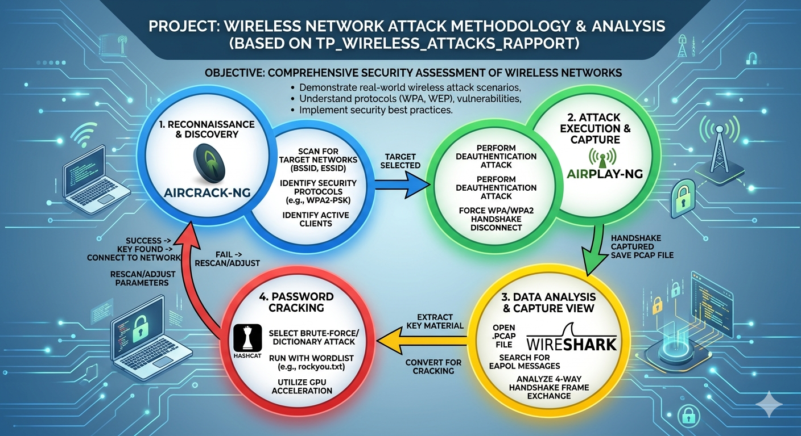
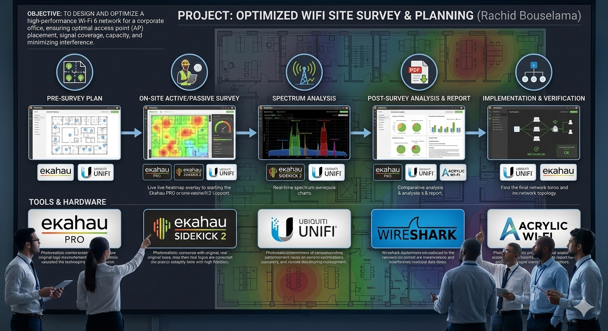
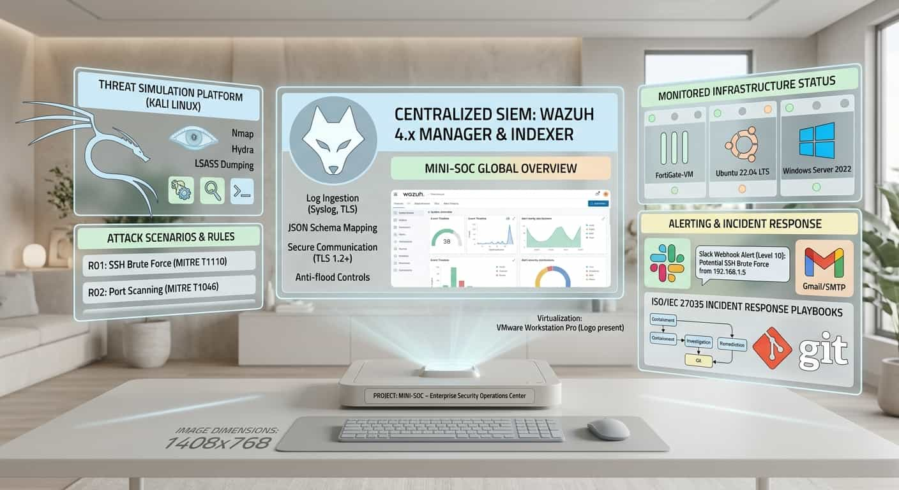

Portfolio
Projets professionnels
Travaux réalisés en sécurité réseau et infrastructure

IDS intelligent : analyse automatisée des journaux
Système de sécurité automatisé utilisant n8n et l IA pour analyser les alertes réseau de Suricata, réduire les faux positifs et automatiser la réponse aux menaces.
Voir le rapport
Recherche en sécurité sans fil
Évaluation de la sécurité Wi-Fi d entreprise avec Kali Linux, Aircrack-ng et des méthodologies de test d intrusion.
Voir le rapport
Planification et étude de réseau Wi-Fi
Étude technique pour concevoir et optimiser la couverture sans fil avec Ekahau Pro, NetSpot et des outils d’analyse du spectre.
Voir le rapport
Mini-SOC – Centre opérationnel de sécurité d entreprise et plateforme SIEM multi-source
Plateforme SIEM Wazuh virtualisée pour la collecte d événements en temps réel, la détection des menaces, les alertes et la réponse aux incidents sur des environnements FortiGate, Ubuntu et Windows Server.
Voir le rapport